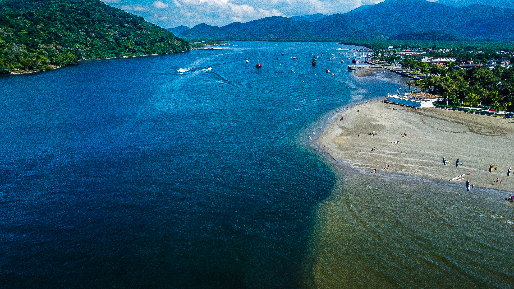
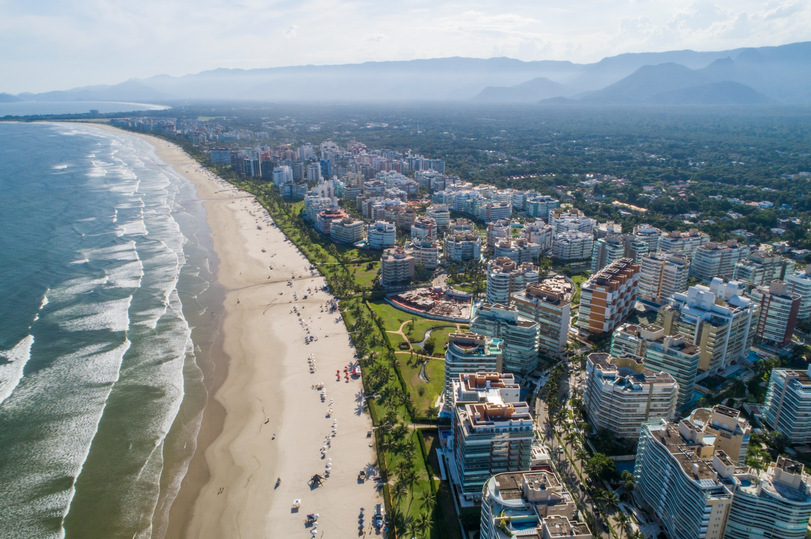
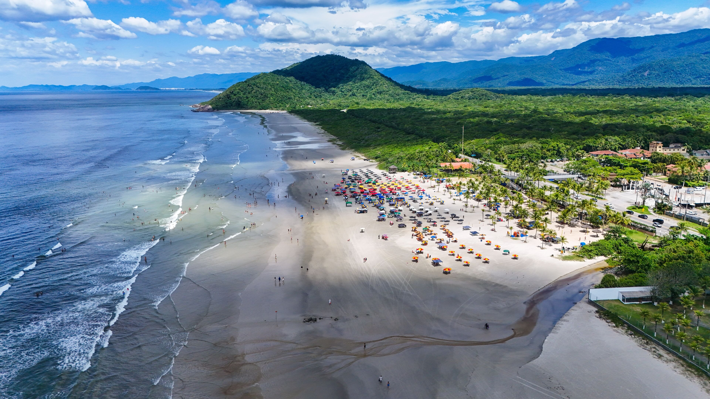

BERTIOGA
História de Bertioga
A região já era habitada por povos indígenas, principalmente os tupinambás, antes da chegada dos portugueses.
Em 1532, durante a colonização, foi construído o Forte São João, considerado a fortaleza mais antiga do Brasil ainda preservada.
O forte teve papel importante na defesa contra invasões estrangeiras e ataques indígenas.
Bertioga também está ligada à história de José de Anchieta, que teria passado pela região em missões religiosas.
Por muito tempo foi um distrito de Santos, até se tornar município independente em 1991.
Curiosidades
- Bertioga tem uma das maiores áreas contínuas de Mata Atlântica preservada do Brasil.
- O nome “Bertioga” vem do tupi e pode significar algo como “morada dos macacos”.
- É um dos destinos favoritos para quem quer fugir do movimento intenso de Praia Grande e Guarujá.
Pontos Turísticos
Praias
- Riviera de São Lourenço
- Praia da Enseada
- Praia de Guaratuba
- Praia de Itaguaré
- Praia de Boracéia
- Praia do Indaiá
- Praia de Maitinga
- Praia das Ilhas


